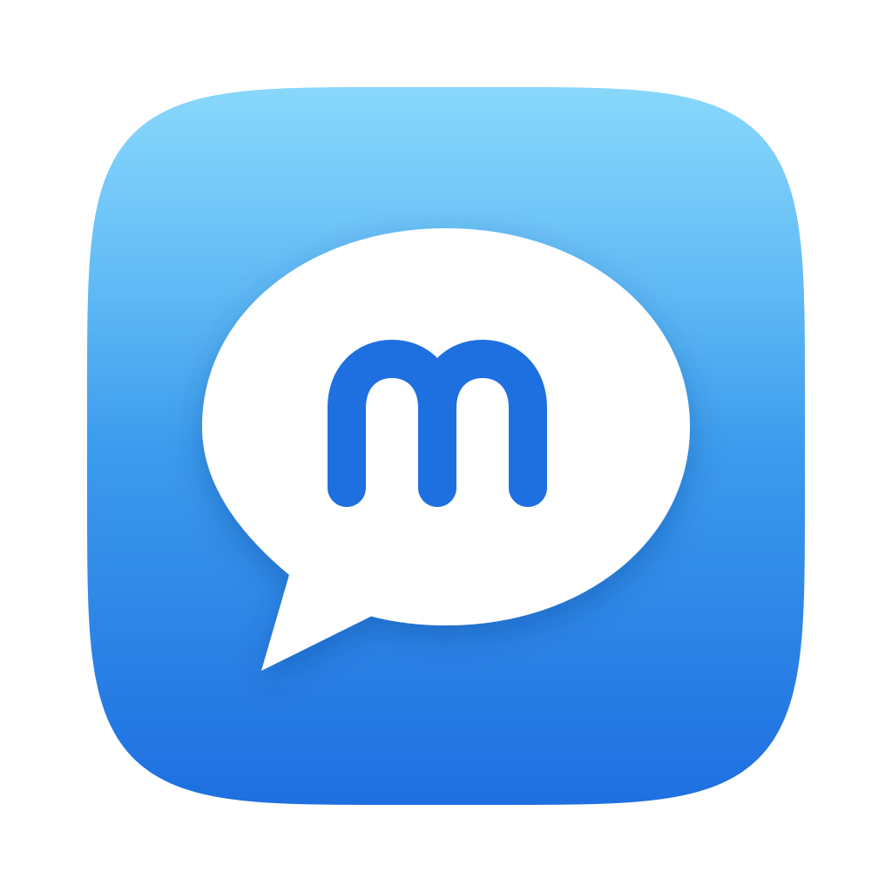
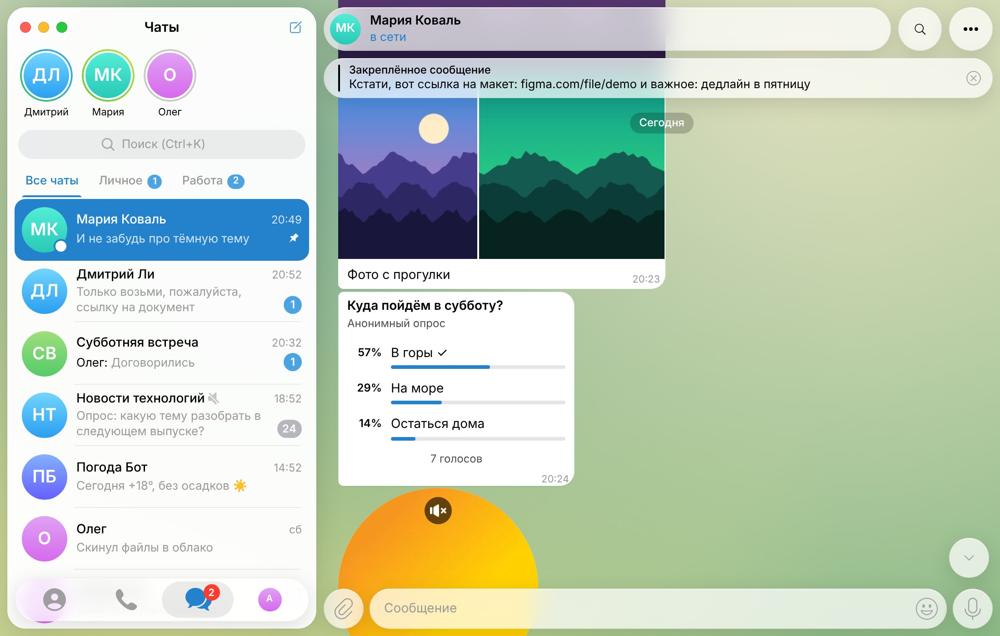
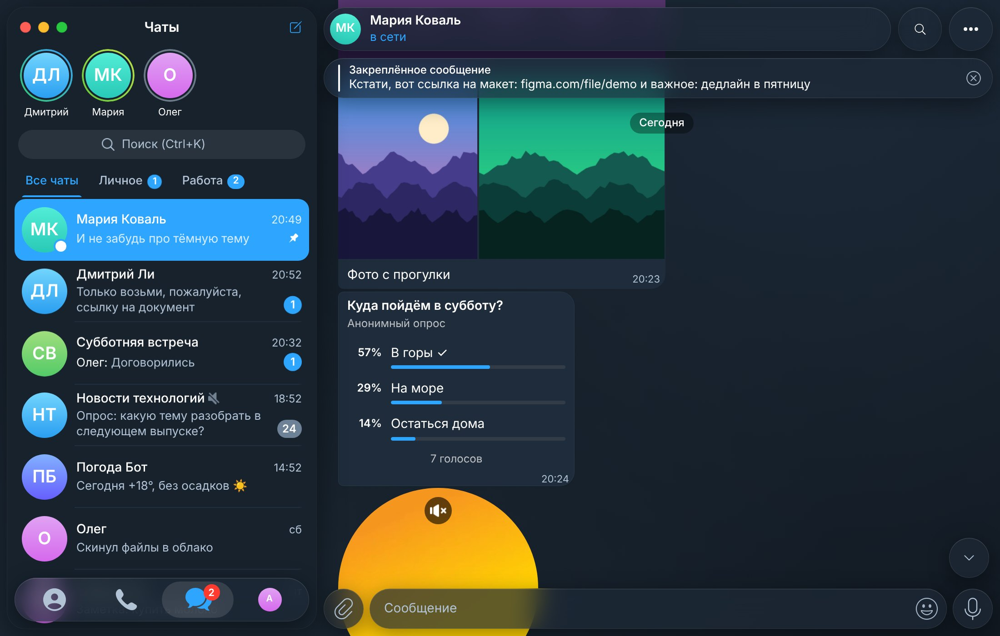

Telegram в стиле macOS — для Windows


Нет. macgram — неофициальный клиент с открытым исходным кодом. Он не связан с Telegram FZ-LLC и Apple. Вход и переписка идут напрямую через серверы Telegram с помощью официальной библиотеки TDLib.
У программы пока нет платной цифровой подписи, а каждая версия новая — поэтому SmartScreen и некоторые антивирусы с «машинным обучением» осторожничают. Исходный код открыт, его можно проверить.
Только на вашем компьютере и в Telegram. Локальная база зашифрована случайным ключом, ключ хранится в «Диспетчере учётных данных» Windows. macgram ничего не отправляет разработчикам.
В программе: Настройки → Сообщить об ошибке, или сразу на GitHub. Не прикладывайте скриншоты с личной перепиской.